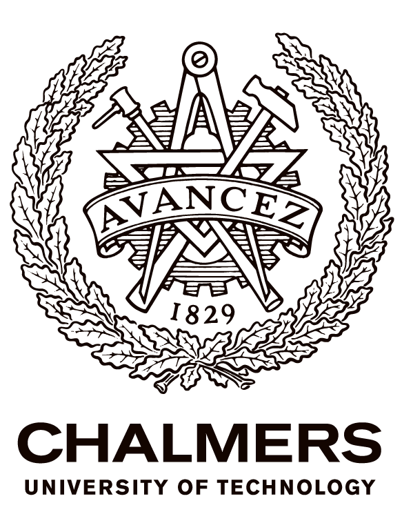
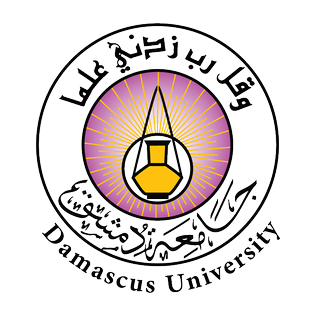

الهندسة السريرية
- صيانة الأجهزة الطبية
- المعايرة والتحقق الوظيفي
- استكشاف الأعطال التقنية وإصلاحها
- الصيانة الوقائية وتوثيق أعمال الخدمة
- سلامة الأجهزة والتوثيق
- الدعم التقني للعاملين في الرعاية الصحية
مهندس طب حيوي
مهندس طب حيوي أمتلك خبرة في التقنيات الطبية بالمستشفيات منذ عام 2018، تشمل أربع سنوات بدوام كامل أعقبتها مهام بالساعة وأعمال استشارية. أدمج هذه الخلفية في الهندسة السريرية مع خبرتي في الروبوتات والأنظمة المضمنة وROS 2 والمحاكاة وتطوير التوائم الرقمية.
عرض مشروعاتي GitHub LinkedIn تنزيل السيرة الذاتية
أحمل درجتَي البكالوريوس والماجستير في الهندسة الطبية الحيوية. وتشمل خبرتي في التقنيات الطبية بالمستشفيات عملاً بدوام كامل من عام 2018 حتى نهاية عام 2021، ثم مهاماً بالساعة وأعمالاً استشارية منذ عام 2022.
تشمل اهتماماتي المهنية والبحثية الأجهزة الطبية والأنظمة الروبوتية والاستشعار المضمن وROS 2 وUnity والذكاء الاصطناعي والتوائم الرقمية لتطبيقات الرعاية الصحية وإعادة التأهيل.
Södersjukhuset · ستوكهولم، السويد
دوام كامل: يناير 2018–ديسمبر 2021
بالساعة/استشاري: يناير 2022–حتى الآن
دعمت التقنيات الطبية في بيئة المستشفى بدوام كامل من يناير 2018 حتى ديسمبر 2021، ثم واصلت العمل من خلال مهام بالساعة وأعمال استشارية منذ يناير 2022 وحتى الآن.

Chalmers University of Technology · غوتنبرغ، السويد
2023–2026 · 120 ECTS
دراسات متقدمة في النمذجة الطبية الحيوية والتصوير الطبي ومعالجة الإشارات والصور وهندسة إعادة التأهيل والصحة الرقمية وتعلّم الآلة.
رسالة الماجستير (30 ECTS): منصة الركبة الروبوتية المحاكية والتوأم الرقمي ←
الهندسة الطبية الحيوية · التصوير الطبي · معالجة الإشارات · الذكاء الاصطناعي
عرض المقررات المختارة ←
جامعة دمشق · دمشق، سوريا
2007–2013 · برنامج هندسي مدته خمس سنوات
تعليم هندسي شامل غطّى الأجهزة الطبية وأجهزة القياس والإلكترونيات والإشارات والتصوير الطبي وأنظمة التحكم وهندسة المستشفيات وصيانة المعدات.
الأجهزة الطبية · أجهزة القياس · الهندسة السريرية · الإلكترونيات
عرض المقررات المختارة ←
تطوير منصة لاختبار الركبة الروبوتية تجمع بين المشغلات الفعلية والمستشعرات المضمنة وROS 2 وتوأم رقمي مبني باستخدام Unity للتحكم والمحاكاة والتحقق في الزمن الحقيقي.
الروبوتات الطبية الحيوية · ROS 2 · Raspberry Pi · Unity · التوائم الرقمية
عرض المشروع ← مشاهدة العرض ←
خبرة في الهندسة السريرية لدى Södersjukhuset تشمل صيانة الأجهزة الطبية ومعايرتها واستكشاف أعطالها وسلامة المرضى وتوثيق أعمال الخدمة والتدريب التقني.
الهندسة السريرية · سلامة المرضى · التدريب التقني
عرض الخبرة ←أهتم بالفرص المرتبطة بالهندسة الطبية الحيوية والأجهزة الطبية والروبوتات والبحث والتطوير.
البريد الإلكتروني: wajih.habrah@hotmail.com
GitHub: WajihHabrah
LinkedIn: وجيه هبره
السيرة الذاتية: عرض السيرة الذاتية